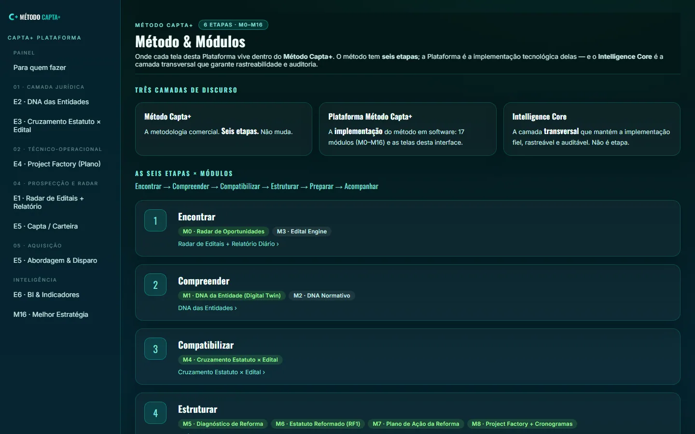
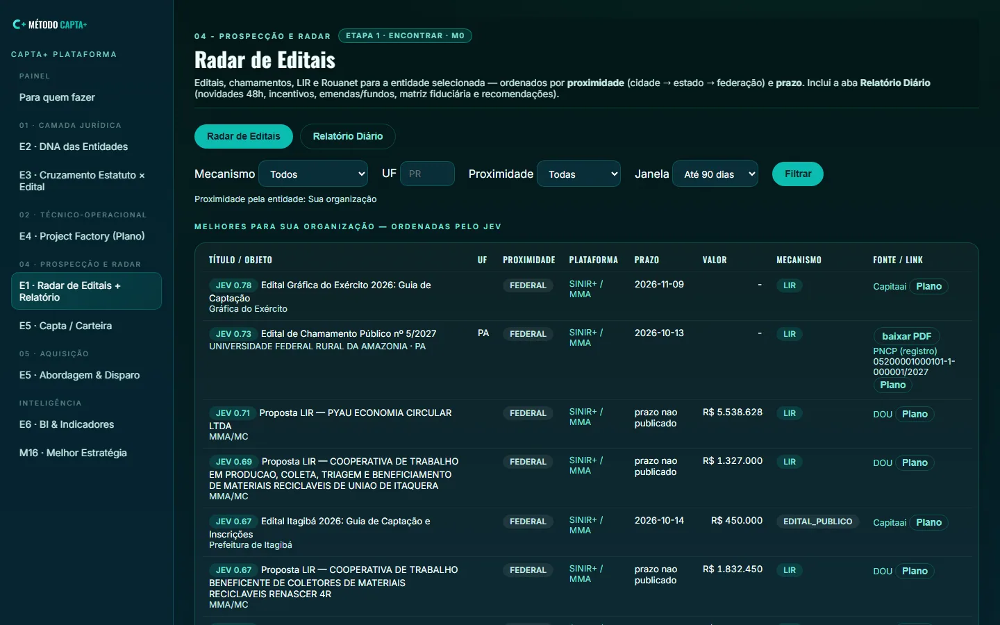
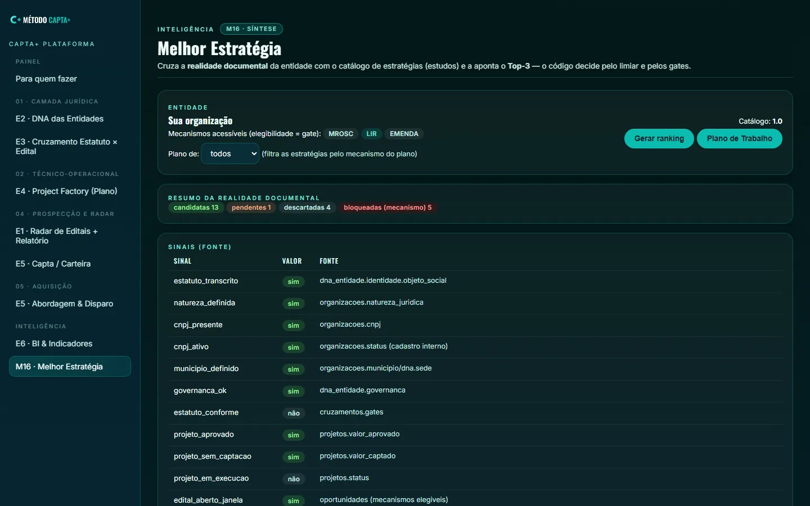

Veja o método em operação.
Estas são telas reais do sistema que conduz a jornada de captação — não são mockups. O Método Capta+ é a metodologia; a Plataforma é onde ela acontece.
Método & Módulos — as seis etapas e os 17 módulos
As seis etapas oficiais, os 17 módulos (M0–M16) que as sustentam e as telas de cada uma — incluindo o M16 · Melhor Estratégia. A mesma definição usada internamente.

Radar de Editais — a oportunidade certa primeiro
Editais, chamamentos, LIR e Rouanet reunidos e ordenados por prioridade: a proximidade (cidade → estado → federação), o prazo e a aderência definem o que fica no topo. Cada linha já traz a plataforma de submissão, o prazo (prazo não publicado quando a fonte não informa data) e a fonte.

Melhor Estratégia (M16) — a plataforma ranqueia, o humano decide
Cruza a realidade documental da organização com o catálogo de estratégias (estudos) e aponta o Top-3; o código aplica o limiar e os gates, e o humano arbitra. A elegibilidade ao mecanismo é gate eliminatório e cada sinal traz a sua fonte.

A demonstração completa — com o seu estatuto, os seus documentos e as oportunidades do seu território — é feita em conversa.
Pedir uma demonstração →